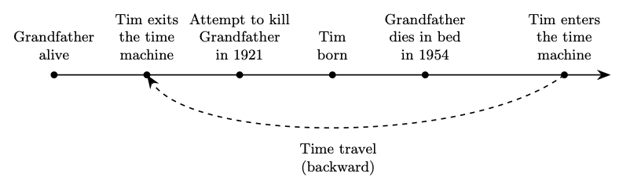
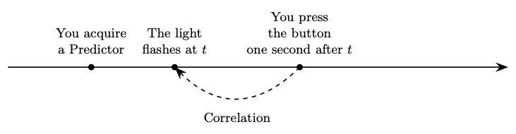

1 Time Travel and Metaphysics
We will survey four interconnected topics in contemporary metaphysics: time, identity over time, personal identity, and free will. The debate over time travel provides a perhaps unexpected entry point into these topics, and we will pay special attention to (Lewis 1976), which constitutes a canonical presentation of the paradoxes of time travel.
1.1 What is Time Travel?
Time travel is a staple of popular culture, since it appears again and again in science fiction literature, major films and TV series, as well as comics and novels. They often involve incoherent scenarios, e.g., Back to the Future, but there are excellent examples of perfectly consistent time travel scenarios. There is, for example, Robert Heinlein’s “All You Zombies” and “By His Bootstraps” and and Ted Chiang’s “The Merchant and the Alchemist’s Gate”. In film, 12 Monkeys (Terry Gilliam, 1995), and Timecrimes (Nacho Vigalondo, 2007) develop coherent time travel plots. (Wasserman 2017) mentions a few other examples.
Time travel involves a discrepancy between time and time. When a time traveler enters a time machine, she turns some dials and one minute later she emerges one year into the past. The problem is that the time traveler’s departure and arrival are, on the one hand, separated by one minute, and, on the other, separated by one year, which are unequal amounts of time. As (Lewis 1976) explains the problem and his proposed solution:
How can it be that the same two events, [the time traveler’s] departure and arrival, are separated by two unequal amounts of time? … I reply by distinguishing time itself, external time, as I shall also call it, from the personal time of a particular time traveler: roughly, that what is measured by his wristwatch. His journey takes an hour of his personal time, let us say; his wristwatch reads one hour later at arrival than at departure. But the arrival is more than an hour in external time, if he travels toward the future; or the arrival is before the departure in external time (or less than an hour after). if he travels toward the past.
Personal time involves the assignment of coordinates to events in the time traveler’s trajectory in terms of common regularities with respect to external time, but as (Wasserman 2017) points out, it is a delicate matter to find perfectly general regularities that
could provide an order and a metric for any object, whether it be a person, a particle, or a time machine.
For Lewis, there is no time travel unless there is a discrepancy between external and personal time. The paradoxes of time travel are supposed to threaten the possibility of time travel, let alone its physical or technological possibility. Once the metaphysical possibility of time travel is secure, we may proceed to ask whether time travel is physically or technologically possible, but that is a question for another day.
1.1.1 Time
(Lewis 1976) describes time travel as travel within a “four-dimensional manifold of events”. On this view, time is akin to the three spatial dimensions in three-dimensional Euclidean space. But the thought that time is a dimension like space remains highly controversial. Some philosophers have argued for at least two important disanalogies between time and space:
- There are objective differences between what events are present, past, and future, whereas there is no objective difference between what location is here and what location is there.
- Present events and objects are more real than events and objects that have now passed into the past or have not yet come to pass. On the other hand, it would be absurd to declare that events and objects located here are more real than those located in Europe or Australia.
One alleged difference between time and space concerns the status of tense and the other concerns the ontology of time, and they will be the topic of the first unit of the course. The philosophers in question are sometimes called \(A\)-theorists and they are contrasted to \(B\)-theorists such as Lewis. The terminology traces back to [McTaggart (1908)].
1.1.2 Identity Over Time
Not only does spacetime constitute a four-dimensional manifold, we, and all objects, inhabit this four-dimensional manifold and describe a trajectory within it. Each time we inhabit determines a three-dimensional temporal stage of a four-dimensional object. We are each a four-dimensional object of which each temporal stage is a part. Change, for Lewis, is variation across stages of a single four-dimensional object.
Enduring things are timelike streaks: wholes composed of temporal parts, or stages, located at various times and places. Change is qualitative difference between different stages—different temporal parts—of some enduring thing, just as a “change” in scenery from east to west is a qualitative difference between the eastern and western spatial parts of the landscape. If this paper should change your mind about the possibility of time travel, there will be a difference of opinion between two different temporal parts of you, the stage that started reading and the subsequent stage that finishes.
One and the same object may be five feet tall at one time in virtue of the height of the relevant temporal part and six feet tall at another time in virtue of the height of a different temporal part. This picture helps Lewis make sense of another time travel puzzle:
A time traveler who talks to himself, on the telephone perhaps, looks for all the world like two different people talking to each other. … What’s true is that he, unlike the rest of us, has two different complete stages located at the same time at different places. What reason have I, then, to regard him as one person and not two?
But this again is not how some philosophers characterize the persistence of objects over time. Some philosophers object that:
- Objects are wholly present at each time at which they exist. They are three-dimensional objects located at different times in the four-dimensional manifold.
- Change is not a matter of variation across temporal stages, since we each have at most one temporal stage at each time at which we exist. Instead, one account may be that one and the same object may be five feet tall at one time and six feet tall at another in virtue of the relations that object bears to each time.
This is the topic of the second unit on persistence.
1.1.3 Personal Identity
The problem of personal identity is a special case of the original problem. Never mind the question of what makes the relevant three-dimensional objects stages of the same material object, there is the further question of what makes them stages of the same person given how heterogeneous their mental states may seem to us. As (Lewis 1976) puts the difficulty:
What unites his stages, including the simultaneous ones, into a single person? The problem of personal identity is expecially acute if he is the sort of time traveler whose journeys are instantaneous, a broken streak consisting of several unconnected segments. Then the natural way to regard him as more than one person is to take each segment as a different person.
He answers that they are stages of the same person in virtue of the mental continuity and connectedness they exemplify with respect to a specific choice of coordinates in terms of personal time:
I answer that what unites the stages (or segments) of a time traveler is the same sort of mental, or mostly mental, continuity and connectedness that unites anyone else. The only difference is that whereas a common person is connected and continuous with respect to external time, the time traveler is connected and continuous only with respect to his own personal time.
This presupposes that personal identity is a matter of mental continuity and connectedness on which there is less than universal agreement. For at least two reasons:
- Mental continuity and connectedness may come apart from bodily continuity and connectedness, and someone may take the latter, and not the former, as a necessary and sufficient condition for personal identity over time.
- One person at one time may be mentally continuous and connected with two persons at a later time. But to the extent to which the latter two persons are different from each other, the former cannot be the same person as both of them.
The second point raises a further question. For you may agree that mental continuity and connectedness is in fact not sufficient for personal identity over time and nonetheless claim that it is what matters in survival. You should be glad that someone is mentally continuous and connected with you in the future even if that person is strictly not the same person as you.
This is the topic of the third unit of the course, where we will focus on the debate over what it takes for someone at one time to be the same person as someone else at a later time.
1.1.4 What Time Travelers Cannot Do
We will close with the question of whether we have free will for which we will use the grandfather paradox as an entry point. Here is how David Lewis introduces the problem in (Lewis 1976):
Consider Tim. He detests his grandfather, whose success in the munitions trade built the family fortune that paid for Tim’s time machine. Tim would like nothing so much as to kill Grandfather, but alas he is too late. Grandfather died in his bed in 1957, while Tim was a young boy. But when Tim has built his time machine and traveled to 1920, suddenly he realizes that he is not too late after all. He buys a rifle; he spends long hours in target practice; he shadows Grandfather to learn the route of his daily walk to the munitions works; he rents a room along the route; and there he lurks, one winter day in 1921, rifle loaded, hate in his heart, as Grandfather walks closer, closer …
Can Tim kill Grandfather? On the one hand, as Lewis notes, there seems to be reason to think so:
He has what it takes. Conditions are perfect in every way: the best rifle money could buy, Grandfather an easy target only twenty yards away, not a breeze, door securely locked against intruders. Tim a good shot to begin with and now at the peak of training, and so on. What’s to stop him? The forces of logic will not stay his hand! No powerful chaperone stands by to defend the past from interference … In short, Tim is as much able to kill Grandfather as anyone ever is to kill anyone.
But, on the other hand, Lewis points out that there seem to be reasons to think Tim cannot in fact kill Grandfather:
Grandfather lived, so to kill him would be to change the past. But the events of a past moment … cannot change. Either the events of 1921 timelessly do include Tim’s killing of Grandfather, or else they timelessly don’t … It is logically impossible that Tim should change the past by killing Grandfather in 1921. So, Tim cannot kill Grandfather.
Here is the timeline Lewis describes:

One way to motivate the question of free will is to ask the extent to which we are better off than the time traveler. Consider the device Ted Chiang describes in his science-fiction piece (Chiang 2005):
By now you’ve probably seen a Predictor; millions of them have been sold by the time you’re reading this. For those who haven’t seen one, it’s a small device, like a remote for opening your car door. Its only features are a button and a big green LED. The light flashes if you press the button. Specifically, the light flashes one second before you press the button.
The Predictor provides a glance into the future, since the flash is in fact supposed to be correlated with the user’s future action. The Predictor flashes only if the user will in fact press the button:
The heart of each Predictor is a circuit with a negative time delay — it sends a signal back in time. The full implications of the technology will become apparent later, when negative delays of greater than a second are achieved, but that’s not what this warning is about. The immediate problem is that Predictors demonstrate that there’s no such thing as free will.
Suppose you the light flashes in your Predictor. Can you refrain from pressing the button one second after the flash? On the one hand, it would seem to be entirely up to you to press or not press the button one second after you the light flashes. On the other hand, the events of a future moment … cannot change. Either the events after the flash timelessly do include your pressing the button exactly one second after the flash or they do not … But if the flash is correlated with the fact that you will press the button, then it is logically impossible that you should change the future by refraining from pressing the button exactly one second after the flash. So, you cannot refrain from pressing the button.
Here is a diagrammatic representation of the situation:

The thought that you cannot change the future may lead one to think that they lack free will, which would, on the face of it, undercut one’s motivation. Here is how (Chiang 2005) illustrates the concern:
Typically, a person plays with a Predictor compulsively for several days, showing it to friends, trying various schemes to outwit the device. The person may appear to lose interest in it, but no one can forget what it means — over the following weeks, the implications of an immutable future sink in. Some people, realizing that their choices don’t matter, refuse to make any choices at all. Like a legion of Bartleby the Scriveners, they no longer engage in spontaneous action. Eventually, a third of those who play with a Predictor must be hospitalized because they won’t feed themselves. The end state is akinetic mutism, a kind of waking coma. They’ll track motion with their eyes, and change position occasionally, but nothing more. The ability to move remains, but the motivation is gone